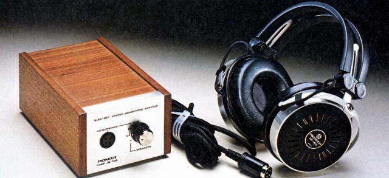
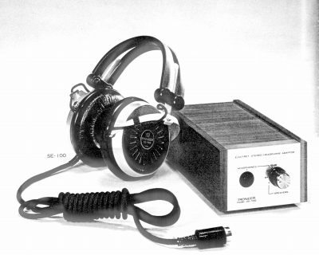
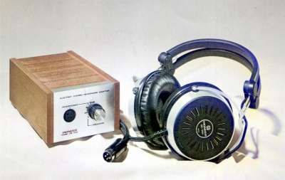

SE-100J

■価格 14,400円
■型式 エレクトレットコンデンサー型
■振動板 2ウェイ方式(厚さ4μ）
■インピーダンス
■再生周波数帯域 20-35,000Hz
■許容入力
■感度 95ｄB以上/100V
■コード 2.5ｍ専用4Pプラグコード
■重量 360g（コード含まず） アダプター1,410ｇ
■発売 1971年
■販売終了 1977年頃
■備考
アダプターJB-100付属
価格は1973年頃までのもの 1974年以降は19,000円
同社のコンデンサー型 SE-1000とはコネクターの互換性なし。
現在判明している範囲では最初の「エレクトレットコンデンサー」型。
なお1972年の「電波科学」誌によれば、安定性向上の為、膜の
マイナーチェンジが行われたそうだ。

